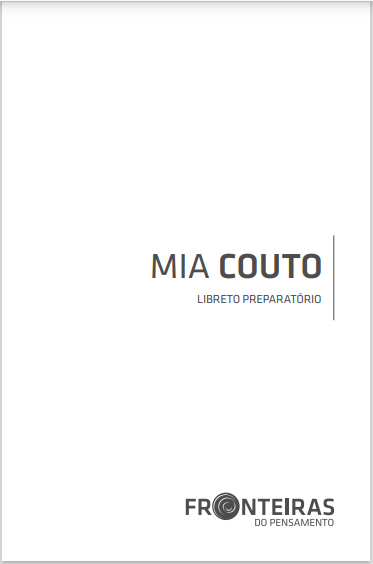

Fronteiras do Pensamento
Descrição do livro
A obra de Mia Couto encena, assim, confrontação/ justaposição cultural entre dois mundos com cosmolo-gias distintas e opostas, que tentam se apaziguar
Baixar LivroA obra de Mia Couto encena, assim, confrontação/ justaposição cultural entre dois mundos com cosmolo-gias distintas e opostas, que tentam se apaziguar
Baixar Livro